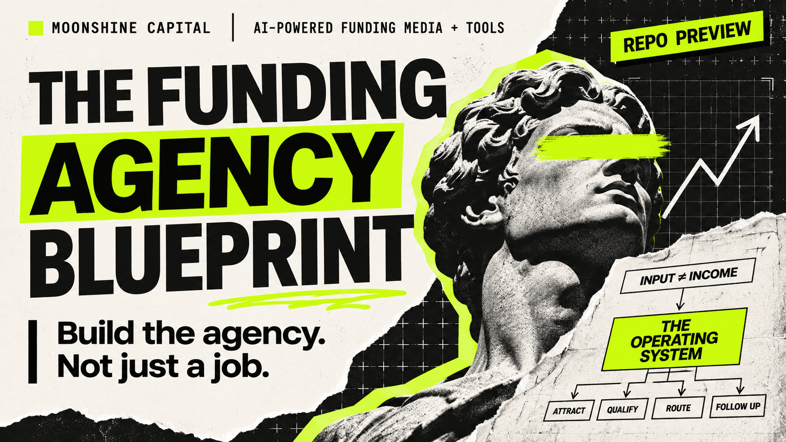

LATEST / EDITION 17
Your Funding Agency Just Got Two AI Employees
Two AI outreach agents support client acquisition and broker recruitment while human operators retain oversight.
READ EDITION ↗Funding is the product. The agency is the asset.
The operating manual for entrepreneurs building modern funding agencies. Real strategies, AI-powered workflows, capital partnerships and practical tools. No guru worship. No recycled sales bullshit. Just leverage.

Two AI outreach agents support client acquisition and broker recruitment while human operators retain oversight.
READ EDITION ↗Argues that a broker’s professional identity shapes follow-up, persistence, and execution more than access to additional leads.
READ EDITION ↗Explains how local visibility, bank relationships, and practical resources can position a funding broker as a trusted community contact.
READ EDITION ↗Four stages. One operating system. No need to figure everything out the hard way.
Meet the assistants, workflows and digital infrastructure that help small teams operate with greater leverage.
Before you build an agency, understand the numbers behind it.
Illustrative planning calculation. Excludes expenses, taxes, commission adjustments and unfunded applications. No earnings guarantee.
Discover capital providers, affiliate opportunities and the technology behind modern funding businesses.
Source capital
EXPLORE ↗38Monetize relationships
EXPLORE ↗18Build infrastructure
EXPLORE ↗Catalog categories may overlap. Verify program terms and eligibility. Moonshine Capital may earn affiliate compensation.
Practical frameworks, scripts and templates for people who would rather build than binge another course.
Built from the perspective of a Marine veteran, entrepreneur and alternative-finance operator interested in what actually works. The Funding Agency Blueprint documents the tools, experiments, systems and lessons behind building a modern funding business.
Get practical strategies, AI workflows, capital partnerships and tools for building a funding business on your own terms.